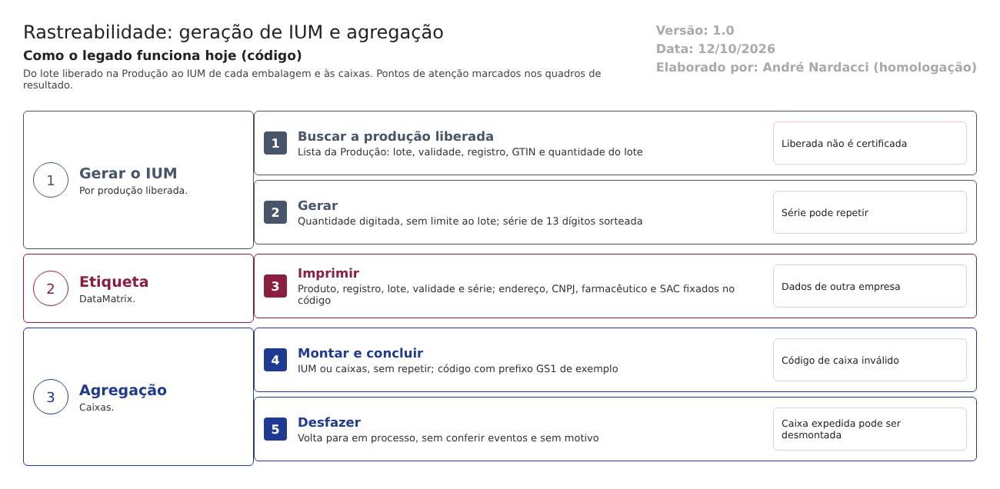

Objetivo
Este documento descreve como a Rastreabilidade do LabMedSys gera o IUM (Identificador Único de Medicamento) de cada embalagem de um lote, imprime a etiqueta e agrega as embalagens em caixas.
O IUM é o que permite seguir cada embalagem até o paciente e recolhê-la se for preciso. Por isso ele precisa: - ser único; - nascer de um lote liberado; - ter a quantidade igual à do lote embalado; - trazer na etiqueta os dados corretos da empresa.
Foi montado a partir do código do sistema legado. O que depende da prática da área está marcado como a validar. Os casos de teste estão no fim.
Escopo
- Geração de IUM e Pesquisa de IUM.
- Etiqueta do IUM.
- Agregação: montar, concluir, desfazer e imprimir.
Fora do escopo: os eventos e a declaração à ANVISA (fluxo 2).
Nomes das telas: como aparecem no menu. Os caminhos de código são relativos a 8.rastreabilidade/app/. Para encurtar: IUM = HSolutions.Rastreabilidade.UI/Controllers/IUMController.cs, Agr = HSolutions.Rastreabilidade.UI/Controllers/AgregacaoController.cs, Svc/ = HSolutions.Rastreabilidade.Domain.Services/.
Visão geral do processo

- Na Geração de IUM, o usuário busca o produto. A lista vem da Produção e só traz produções liberadas.
- Informa a quantidade de IUM e gera.
- Cada IUM recebe um número de série sorteado e nasce "aguardando uso".
- As etiquetas são impressas, com o código bidimensional (DataMatrix).
- Na Agregação, os IUM (ou outras caixas) são lidos para uma caixa, que ganha um código próprio. A caixa é concluída e pode ser desfeita.
Descrição funcional das etapas
1. Gerar o IUM
Regras de negócio
- RN001 – A busca de produto chama a Produção, que devolve só as produções na situação liberada, com lote, validade, registro, GTIN e a quantidade do lote (
2.producao/app/LaboSys_UI/Api/ConsultarProdutoController.cs:66-90;HSolutions.Rastreabilidade.Services/Producao/ProdutoService.cs:23-29). - RN002 – A liberação da Produção pode ser feita por quem finalizou a produção e não chega ao Estoque (Produção, fluxo 1). Um IUM pode nascer de um lote ainda não certificado pela Pessoa Delegada, ou reprovado depois.
- RN003 – A geração exige quantidade, número do registro, lote e validade (
Svc/Validators/IUMValidator.cs:25-48). Lote, validade, registro e GTIN são reenviados pela tela na gravação, em vez de relidos da Produção (IUM:160-175). - RN004 – A quantidade não é limitada à do lote. A Produção envia a quantidade do lote, mas a geração só exige que seja maior que zero. Pode-se gerar mais IUM do que embalagens.
- RN005 – Gerar de novo para o mesmo lote é possível, sem aviso. A confirmar no teste.
- RN006 – O número de série tem 13 dígitos sorteados (
Svc/IUMService.cs:137-160). A repetição só é conferida dentro da mesma geração (linhas 153-156). Não há conferência contra os IUM já gravados nem índice único no banco (Hsolutions.Rastreabilidade.DB/dbo/Tables/TBL_IUM.sql). - RN007 – O número do IUM é a junção, sem separadores, de registro, série, mês e ano da validade, lote e GTIN (
Svc/IUMService.cs:150). Ponto para validar com Assuntos Regulatórios: se esse formato segue o padrão exigido pelo SNCM. - RN008 – O IUM nasce aguardando uso. Grava quem gerou e quando, pelo servidor.
Telas do sistema
| Módulo | Tela | Finalidade |
|---|---|---|
| Rastreabilidade | Geração de IUM | Buscar a produção liberada e gerar os IUM |
| Rastreabilidade | Pesquisa de IUM | Consultar por período, lote, descrição e situação |
2. Imprimir a etiqueta
Regras de negócio
- RN009 – A etiqueta traz o código DataMatrix, o produto, a composição, o registro, o lote, a validade e o número de série (
IUM:267-330;HSolutions.Rastreabilidade.UI/Areas/Relatorio/Views/IUM/EtiquetaOK.rdlc). - RN010 – Dados de outra empresa fixados no código: o endereço, o CNPJ, o nome e o registro no conselho do farmacêutico responsável, o telefone do SAC e o código do formulário estão escritos no programa (
IUM:282-285, 288, 314). Um comentário no código diz que é assim "nesta versão", para um cliente anterior. Não vêm do cadastro da empresa. Os valores não foram copiados para este documento.
Telas do sistema
| Módulo | Tela | Finalidade |
|---|---|---|
| Rastreabilidade | Etiqueta do IUM (pela pesquisa e pela geração) | Imprimir as etiquetas |
3. Agregar
Regras de negócio
- RN011 – A agregação reúne IUM e outras agregações. Precisa de pelo menos um dos dois: "Precisa ter pelo menos uma Agregação ou IUM." (
Svc/AgregacaoService.cs:57-62). - RN012 – Um IUM ou uma agregação não podem estar em duas agregações: "Esse IUM já esta em uma agregação.", "Esse Agregação já esta em outra agregação." Não se agrega uma caixa a ela mesma (
Agr:185-233). - RN013 – Salvar deixa a caixa e os IUM "em processo de agregação"; concluir deixa a caixa "concluída" e os IUM "agregados" (
Agr:264-504). - RN014 – O código da caixa é prefixo + sequência + dígito verificador (
Svc/AgregacaoService.cs:65-72). - O prefixo da empresa no padrão GS1 está fixado com um valor de exemplo, "123456789" (linha 19). Os códigos não identificam a empresa.
- A sequência parte da maior caixa não excluída (linhas 165-175). Inferência: se a última caixa for excluída, o código dela pode ser reutilizado.
- RN015 – Desfazer uma caixa concluída a volta para "em processo" sem conferir se ela já teve evento de embalagem e transporte ou de entrega, e sem pedir motivo (
Agr:506-550).
Telas do sistema
| Módulo | Tela | Finalidade |
|---|---|---|
| Rastreabilidade | Agregação | Montar, concluir, desfazer e imprimir caixas |
Pontos de atenção
1. Número de série que pode se repetir (RN006). Dois IUM iguais tornam impossível saber qual embalagem é qual.
2. Mais IUM do que embalagens, e geração repetida para o mesmo lote (RN004, RN005). Sobram identificadores sem embalagem, que podem ser usados indevidamente.
3. IUM de lote não certificado (RN001, RN002). A "liberação" vem da Produção, sem a certificação da Pessoa Delegada (art. 8º, XV).
4. Etiqueta com os dados de outra empresa (RN010). Endereço, CNPJ, farmacêutico responsável e SAC errados na embalagem. É também um dado pessoal de terceiro guardado no código.
5. Código de caixa com prefixo de exemplo (RN014). Os códigos das caixas não são válidos para a cadeia de distribuição.
6. Desfazer depois de expedir (RN015). Uma caixa já declarada como enviada pode ser desmontada, e o registro deixa de bater com o que saiu.
7. Formato do IUM a validar (RN007).
Casos de teste
Dados:
- Uma produção TESTE na situação liberada na Produção, com lote, validade, registro e GTIN, e com a quantidade do lote conhecida.
- Usuários t.admin e t.semadmin.
| Caso | O que fazer | Resultado esperado |
|---|---|---|
| CT-RAS-017 | Na Geração de IUM, buscar o produto TESTE |
Só aparecem produções liberadas (RN001) |
| CT-RAS-018 | Gerar IUM com quantidade zero | "A quantidade a ser gerada é obrigatória." (RN003) |
| CT-RAS-019 | Gerar 5 IUM para a produção TESTE |
5 IUM "aguardando uso", com número de série de 13 dígitos (RN006, RN008) |
| CT-RAS-020 | Gerar mais IUM do que a quantidade do lote | Pela norma, recusa. Registrar se aceitar (RN004, ponto 2) |
| CT-RAS-021 | Gerar de novo para a mesma produção TESTE |
Pela boa prática, aviso. Registrar se aceitar sem aviso (RN005) |
| CT-RAS-022 | Pedir à TI uma consulta de números de série repetidos na tabela de IUM | Nenhum. Registrar se houver (RN006, ponto 1) |
| CT-RAS-023 | Imprimir a etiqueta de um IUM TESTE |
Registrar o endereço, o CNPJ, o farmacêutico e o SAC impressos e se são da empresa (RN010, ponto 4) |
| CT-RAS-024 | Ler com um leitor o DataMatrix da etiqueta | Registrar o conteúdo lido e o formato, para validar com Assuntos Regulatórios (RN007) |
| CT-RAS-025 | Criar uma agregação TESTE com 3 IUM e concluir |
Caixa concluída; IUM "agregados"; registrar o código da caixa (RN013, RN014, ponto 5) |
| CT-RAS-026 | Tentar pôr um IUM da caixa anterior em outra agregação | "Esse IUM já esta em uma agregação." (RN012) |
| CT-RAS-027 | Salvar uma agregação sem IUM nem caixa | "Precisa ter pelo menos uma Agregação ou IUM." (RN011) |
| CT-RAS-028 | Registrar a entrega da caixa TESTE (fluxo 2) e depois desfazer a agregação |
Pela norma, recusa. Registrar se desfizer (RN015, ponto 6) |
| CT-RAS-029 | No Estoque, bloquear o lote TESTE; gerar IUM para ele |
Pela norma, recusa. Registrar se gerar (RN002, ponto 3) |
Prioridade (testes por risco): CT-RAS-020, 022, 023, 029, 028 e 025 primeiro. Eles tocam: - mais IUM do que embalagens; - o número de série repetido; - a etiqueta com dados de outra empresa; - o IUM de lote bloqueado; - a caixa desfeita depois de expedida; - o código de caixa com prefixo de exemplo.